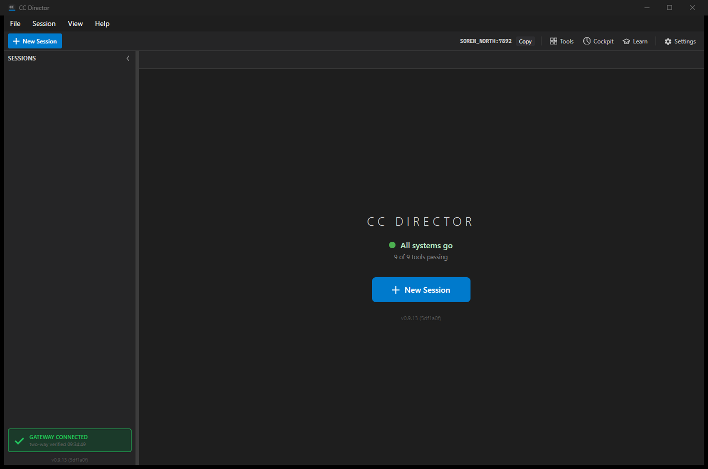

Branch: issue-632-director-startup-telemetry |
Implementation commit: 5df1a0f (rebased onto post-#664 main 4fecb53)
On Director startup, once the Control API has initialized and a stable DirectorId is known,
the Director fires exactly one best-effort POST to
<gateway.url>/telemetry/director-startup with the body
{ director_id, machine_name, app_version }. The report runs off the user-interface thread
(inside the Control API startup Task.Run), so it never delays the main window appearing.
When no gateway.url is configured the reporter is a logged no-op with no cloud call.
New and changed files:
src/CcDirector.Core/Account/IDirectorStartupTelemetryReporter.cs - the reporter contract.src/CcDirector.Core/Account/DevThrottleDirectorStartupTelemetryReporter.cs - the reporter,
modeled on DevThrottleLoginTelemetryReporter (#630): same gateway.url
resolution from config.json, the same DEVTHROTTLE_STARTUP_TELEMETRY_URL
environment override seam, and the same best-effort no-op-when-unconfigured pattern.src/CcDirector.Avalonia/App.axaml.cs - wires FireDirectorStartupTelemetryAsync
into startup, fired off the UI thread after the DirectorId is known, with a best-effort swallow+log.src/CcDirector.Core.Tests/Account/DevThrottleDirectorStartupTelemetryReporterTests.cs - 7 unit tests.| # | Criterion | Expected | Actual (proof) | Result |
|---|---|---|---|---|
| 1 | On launch with a Gateway configured, the Director POSTs exactly one startup event to
<gateway.url>/telemetry/director-startup (Gateway log shows it with the director_id). |
Exactly one POST; body carries director_id, machine_name, app_version. | Live run of the slot-14 Director against a stub Gateway: the stub log shows
exactly one POST with body
{"director_id":"d0d3ae7b-...","machine_name":"SOREN_NORTH","app_version":"0.9.13"}.
See scenarioA-stub-gateway-requests.log and scenarioA-director-timeline.txt.
Also proven over real HTTP by the harness (results.json: ac1_post_count=1). |
PASS |
| 2 | With no gateway.url configured, startup proceeds normally and a skip line is logged
(no crash, no cloud call). |
No HTTP call; a skip line logged; no throw. | Harness AC2 (reporter constructed with empty gateway URL, env override unset):
gateway hits unchanged (0 -> 0), no throw, and the skip line
[DevThrottleDirectorStartupTelemetryReporter] ReportStartupAsync: no gateway.url configured,
skipping director-startup telemetry (Phase 1 no-op) is logged.
See director-reporter-log-lines.txt and results.json (ac2_no_call=true, ac2_threw=false).
Also covered by the unit test ReportStartupAsync_NoGatewayConfigured_IsNoOpAndMakesNoCall. |
PASS |
| 3 | The startup POST runs off the UI thread and does not delay the main window appearing (window-shown log timestamp is not gated on the POST). | POST runs on a background task; main window shown independently of the POST. | The reporter is fired inside the Control API startup Task.Run (a background thread),
not on the UI dispatcher path that shows the window. In the live timeline the POST completes at
09:34:49.605 while the main window is shown at 09:34:49.841 on the UI thread -
the "Main window shown" line is on a separate thread and is NOT sequenced after the POST in code.
The running app is captured in scenarioA-running-app.png. See scenarioA-director-timeline.txt. |
PASS |
| 4 | Unit/integration coverage for the reporter target (Gateway URL + body) and the no-gateway no-op. | Tests assert the URL + body and the no-op-makes-no-call. | 7 unit tests pass (unit-tests.txt): URL+body, trailing-slash handling, app_version omission,
no-gateway no-op (no call), non-success throws, empty director-id throws, machine_name default.
Plus the live HTTP harness exercising both AC1 and AC2. |
PASS |
Stub Gateway request log (the first line is the harness reset marker; the single Director POST follows):
[scenario-A] log reset 2026-06-22T09:34:46
[2026-06-22T13:34:49.602Z] POST /telemetry/director-startup body={"director_id":"d0d3ae7b-60c9-4ade-ab2e-82c1c4c5f3e1","machine_name":"SOREN_NORTH","app_version":"0.9.13"}
Director log timeline (off-UI-thread POST vs main-window-shown):
09:34:49.510 [CcDirector] Account startup gate decided Start ...; showing the main window 09:34:49.594 [CcDirector] Control API listening on http://127.0.0.1:7892 (directorId=d0d3ae7b-...) 09:34:49.599 [DevThrottleDirectorStartupTelemetryReporter] POSTing director-startup event to gateway ... 09:34:49.605 [DevThrottleDirectorStartupTelemetryReporter] response status=202 09:34:49.606 [CcDirector] Director-startup telemetry reported (directorId=d0d3ae7b-...) 09:34:49.841 [CcDirector] Main window shown; starting background session validation next
Running app (slot-14 build, v0.9.13 (5df1a0f)):

Reporter log lines captured during the harness run (the third line is the no-op skip line):
[DevThrottleDirectorStartupTelemetryReporter] POSTing director-startup event to gateway http://127.0.0.1:59723/telemetry/director-startup (director_id=director-proof-id-001, machine_name=PROOF-MACHINE) [DevThrottleDirectorStartupTelemetryReporter] response status=202 [DevThrottleDirectorStartupTelemetryReporter] no gateway.url configured, skipping director-startup telemetry (Phase 1 no-op)
No architecture or security drift. The new egress is via the Gateway (an existing architectural element); there is no new direct-cloud egress, and no security rule (DT-01..DT-NN) changes. The reporter never logs a token (it sends none) and the body carries only director_id, machine_name, and app_version.
main (which now contains
#664, the startup login-gate removal) so the telemetry is wired into the post-#664 App startup flow and the
main window boots straight up - matching the live Scenario A capture above.
dotnet build cc-director.sln -> Build succeeded, 0 Warning(s), 0 Error(s).
Reporter unit tests -> Passed! Failed: 0, Passed: 7. See unit-tests.txt.
I believe this is finished.